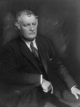

El Grito: el eco del miedo interior

Hay emociones que se sienten y hay emociones que gritan. En El Grito, Edvard Munch no retrató simplemente a una persona, sino la angustia que nos habita a todos. Cada línea ondulada es un latido acelerado, cada color un grito silencioso que se convierte en tormenta. Realizado en 1893, esta obra es un símbolo universal del miedo, la ansiedad y la vulnerabilidad: el reflejo del alma humana enfrentada a su propia fragilidad y a la incertidumbre de la vida.
El artista que pintaba con el espíritu
Edvard Munch nació en 1863, en Noruega, y vivió 80 años dedicados al arte. Su vida estuvo marcada por la enfermedad y la muerte temprana de seres queridos, lo que impregnó sus obras de melancolía y emoción profunda. Munch no buscaba la perfección técnica, sino la autenticidad emocional: sus pinceladas eran a veces violentas, a veces suaves, pero siempre cargadas de sentimiento. Exploraba la psicología del ser humano antes de que la psicología moderna existiera, convirtiendo sus cuadros en espejos del alma.
Un paisaje que respira ansiedad
En El Grito, la naturaleza no es un fondo neutro, sino un protagonista más. El cielo arde en tonos rojos, naranjas y azules, como un incendio emocional que envuelve todo. Las ondulaciones del fiordo y del horizonte parecen temblar y moverse con la tensión de la escena, mostrando cómo Munch fusionaba lo interno con lo externo. El paisaje refleja la inquietud de la mente humana, transformando la realidad en una extensión del miedo que siente la figura central.
La figura que habla sin palabras
La silueta central es casi un símbolo universal de la ansiedad: encorvada, con la boca abierta y las manos presionando sus mejillas, parece absorber y reflejar el mundo que la rodea. No tiene rasgos individuales definidos, y eso la hace aún más poderosa: puede ser cualquiera de nosotros, en cualquier momento de desesperación. Munch logra que la emoción se transmita directamente al espectador, sin necesidad de explicaciones, solo con colores, formas y energía.
Entre lo personal y lo colectivo
Aunque El Grito nació de la experiencia personal de Munch, su mensaje es universal. Todos hemos sentido ese vértigo emocional que se convierte en un grito silencioso, y esta obra captura ese instante con intensidad única. La combinación de colores, líneas y deformaciones visuales crea un efecto casi hipnótico, un remolino que nos arrastra hacia la emoción más pura y primitiva.
Un espejo del alma moderna
Hoy, El Grito sigue resonando porque trasciende su tiempo y lugar. No es solo un cuadro; es una ventana hacia nuestra propia vulnerabilidad y la fragilidad humana. Nos recuerda que las emociones más profundas, aunque difíciles de expresar, son universales y nos conectan entre todos. Cada vez que alguien contempla la obra, se enfrenta a su propio eco interior, descubriendo que el miedo y la ansiedad pueden ser entendidos, compartidos y hasta transformados en arte.